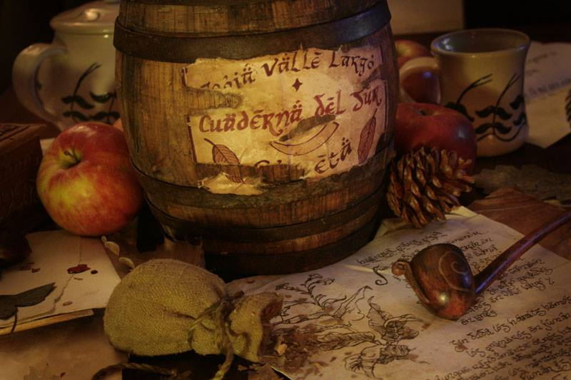

Longbottom Leaf

Description
A Pipeful of Peace
Ingredients:
- 1 pouch of the finest Longbottom Leaf tobacco (sought from the Hobbiton market)
- A pinch of Shire-grown herbs (for a touch of Green Dragon charm)
- 1 well-seasoned, hand-carved pipe (preferably made by a Hobbit craftsman)
- A cozy Hobbit hole or a quiet spot in the Shire's countryside
Instructions:
- Begin by selecting the most comfortable spot in your cozy Hobbit hole or a quiet nook in the Shire's countryside. A comfy armchair is a must.
- Gently fill your hand-carved pipe with the finest Longbottom Leaf tobacco. Take care not to spill a single leaf.
- Add a pinch of Shire-grown herbs to your tobacco mixture for a dash of Green Dragon charm. This step is optional but recommended for a unique twist.
- Find a peaceful spot outdoors, under a tree or by the tranquil waters of the Brandywine River, where you can enjoy the simple pleasures of Middle-earth.
- Carefully light your pipe with a wooden match and inhale the aromatic smoke. Let the soothing scent transport you to a world of Hobbitish tranquility.
- Relax, puff on your pipe, and contemplate life's little joys, like second breakfasts and long walks through the Shire.
Longbottom Leaf tobacco is known for its calming and contemplative properties, making it the perfect companion for any Hobbit's leisurely day. Just remember to share a pipeful of peace with a fellow Hobbit, and you'll be spreading cheer throughout the Shire!
Return